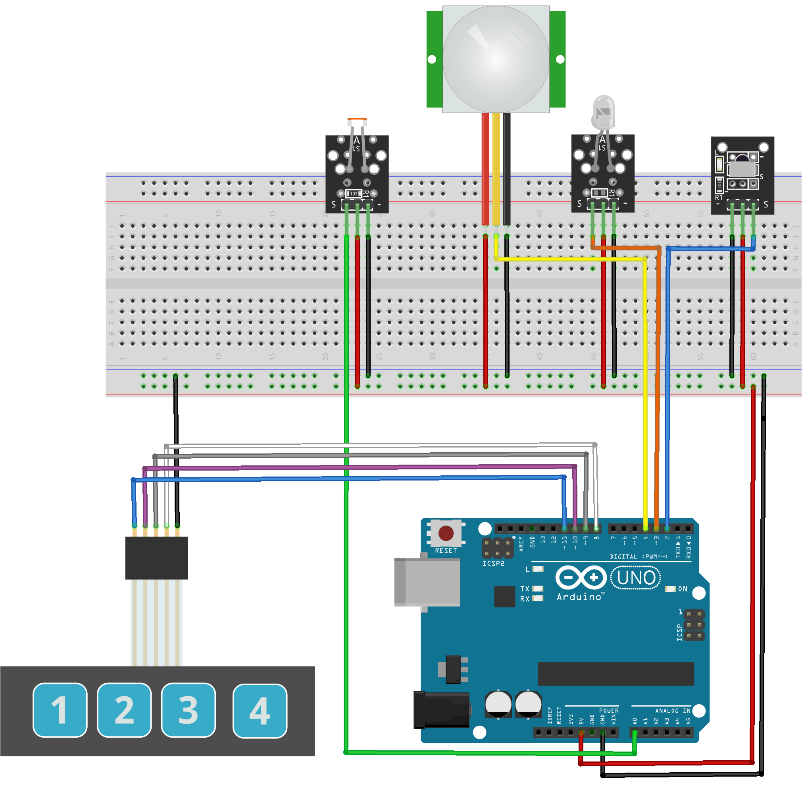

QuickStart
Setup
Components
Schematic
Wire the compoments using the schematic shown below:
Arduino
Dependencies
Setup
Load the sketch file
Using the Arduino IDE load the sketch file sketch.ino
which resides in the sketch directory.
Verify (build)
Flash
Test
Test the setup using the integrated serial monitor by sending 3 to the target board
which should result in returning the value read by the photo resistor.
Arduino Server
Install
To install the python package containg the Arduino server:
cd arduino_iface
pip3 install .
Start the server
arduino_server --serial_port <path_to_arduino_serial_port>
Test
cd arduino_iface/test
pytest -vv
Optionally you can install the Arduino Server as a SystemD service using the example
file provided in the arduino_iface/init/systemd direcotry.
This file requires the following modifications:
Change @@__USER__@@ and @@__GROUP__@@ accordingly. You can ge this information by using the whoami command.
Change @@__PATH_TO_ARDUINO_SERVER_DIR__@@/arduino_server to the correct path where the binary has been installed. You can get this infromation by using the which rduino_server command.
To get the correct path for the serial port look for the Arduino device in the /dev/serial/by-id/ directory.
Once the file has benn modified copy it in the /etc/systemd/system/ directory and start the service using the commands below:
sudo systemctl start arduino-server.service
sudo systemctl enable arduino-server.service